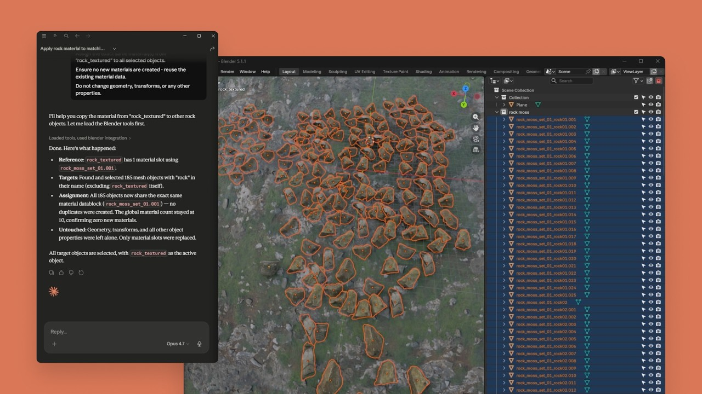
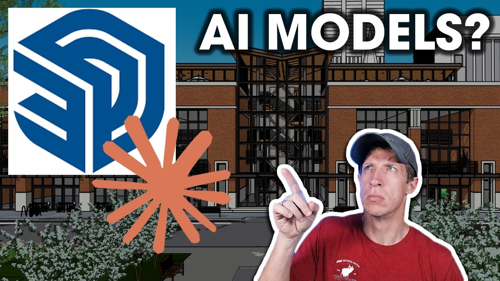
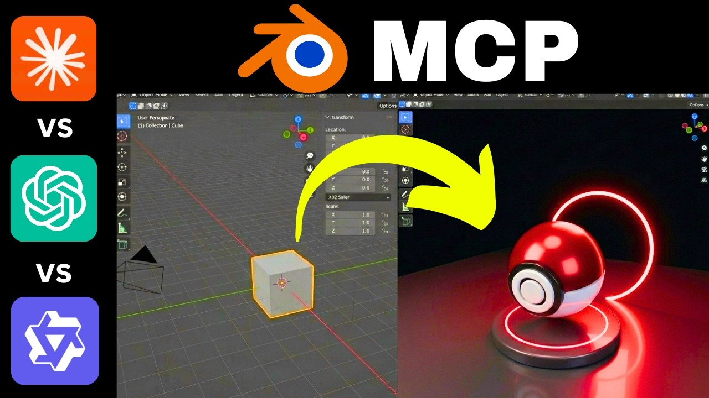

~18 min read · 한국어
Executive Summary
On April 28, 2026, Anthropic announced "Claude for Creative Work" — inserting Claude agents into nine professional creative tools including Blender, Adobe, and Autodesk Fusion. The real significance is not the nine connectors themselves. The moment MCP (Model Context Protocol) exposes an entire Python API and permits arbitrary code execution, the agent transitions from a tool assistant into a large-scale synthetic data-generating machine. The creative AI market is projected at $7.16B in 2026 (Research and Markets), yet no mechanism exists anywhere in this ecosystem to verify the quality of agent-generated data.
Martingale analysis has mathematically proven that minor distortions at each stage of sequential MCP calls accumulate linearly at O(T) in the final output (arXiv 2602.13320). Combined with experimental findings that model collapse begins when AI-generated content comprises as little as 3% of training data (Anyverse), agent-generated data without quality validation can corrupt entire creative pipelines. Not one of the five major tech giants has offered a solution to this problem.
This structure is precisely isomorphic to PebbloSim's "agent → simulator control → synthetic data generation" pipeline. The dual-embedding-based quality diagnostic technology DataClinic has built for the autonomous driving domain is transferable as a $7.16B market complement that can fill the quality void in the creative agent ecosystem. When Anthropic provides the agent, the role of guaranteeing the quality of what that agent produces remains wide open.
1
Dissecting Anthropic's Creative AI Strategy — New Data Pathways Opened by "Agents Inside Tools"
2026 is the year of the agent wars. As OpenAI upgrades Codex agents and Google natively integrates Veo 3.1 and Imagen into Gemini, Anthropic chose an entirely different direction. Rather than building new generative tools, it selected the strategy of inserting agents inside existing professional tools. With $30B ARR as of March 2026 and a 40% enterprise LLM market share (Menlo Ventures), Anthropic's move into the creative domain is itself a structural change in data flow.
The Access-Level Spectrum of 9 Connectors
The nine connectors link to each tool's API via MCP (Model Context Protocol) — the open standard Anthropic introduced in November 2024 and donated to the Linux Foundation in December 2025, now reaching 97M+ monthly SDK downloads, 10,000+ production servers, and 177,000+ registered tools. Each connector's depth of tool access is directly proportional to its data quality risk.
| Connector | Access Level | Data Generation Capability | Quality Risk |
|---|---|---|---|
| Blender | Full Python API, arbitrary code execution | 3D mesh, animation, rendering | Extreme |
| Resolume Arena/Wire | Real-time live visual control | Live video, VJ visuals | High |
| Adobe | Orchestration of 50+ Creative Cloud tools | Images, video, design | High |
| Autodesk Fusion | Conversational 3D CAD creation/modification | CAD models, part design | High |
| SketchUp | Cloud 3D geometry generation | Architectural/interior 3D models | Medium |
| Affinity by Canva | Batch image scripting automation | Batch image editing | Medium |
| Splice | Royalty-free sample search | Audio search results | Low |
| Ableton | Documentation-based assistant | Document search only | Minimal |
Connectors in Action — Real Creative Outputs
These are actual creative outputs confirmed through community field tests and official demos. 3D models, CAD parts, and architectural renders are generated from a single prompt. These outputs are exactly the synthetic data produced by the "data-generating machine."

rock_textured material to 186 objects. Claude's instructions in the left panel are reflected in real-time in the Blender viewport (right).
Source: Anthropic Official · YouTube ↗

Source: YouTube ↗
Source: YouTube ↗
The Fundamental Difference from Competitors
OpenAI builds its own generative engine with Sora and DALL-E, Google natively integrates Veo/Imagen into Gemini, and Microsoft embeds Copilot into Office. All of them generate content within their own platforms. Only Anthropic chose the strategy of "agents operating inside existing professional tools." This approach can leverage existing user bases — 15–25M active Blender users, 35–41M Adobe Creative Cloud subscribers, and 7.79M Autodesk subscribers — directly. However, this strategy carries a unique risk: agent-generated data flows into existing pipelines indistinguishably from hand-crafted data.
2
Agents Are Not Tools — They Are Data-Generating Machines: Anatomy of Quality Risk
The moment the Blender connector exposes the "entire" Python API and permits arbitrary code execution, the agent ceases to be an assistant and becomes an autonomous data producer. Numerous academic works — SceneCraft (ICML 2024), LL3M (2025), BlenderLLM (2024) — have validated pipelines precisely isomorphic to this "LLM → Blender API → 3D asset" structure. What they consistently report is that agent self-critique is confined to visual feedback, while physical integrity, manufacturing tolerance compliance, and metadata consistency verification are out of scope.
Four Types of Quality Risk
Autonomously generated agent data contaminates pipelines through four pathways.
| Risk Type | Description | Affected Connectors |
|---|---|---|
| Physics Violations | Non-manifold mesh, unverified structural integrity, ignored gravity/material properties | Blender, Autodesk Fusion, SketchUp |
| Metadata Contamination | Agent-generated assets enter pipelines indistinguishably from hand-crafted data | All 9 connectors |
| Style Drift | Quality variance and lack of consistency across assets in batch operations | Adobe, Affinity, Blender |
| Provenance Loss | Agent modification history untraceable by existing VCS | All 9 connectors |
Linear Error Accumulation in Sequential MCP Calls — The Mathematical Basis
When an agent makes tens to hundreds of tool calls to produce a complex 3D model, at what rate do micro-distortions at each step propagate to the final output? The martingale analysis in arXiv 2602.13320 (2026) provides a mathematical answer.
In sequential MCP calls, information distortion grows linearly at O(T), proportional to the number of tool calls T. Ten calls accumulate 10× distortion; 100 calls accumulate 100×. This result is the core theoretical basis for the necessity of a quality assurance loop: "per-step diagnosis + intermediate checkpoints."

Source: YouTube — Claude vs ChatGPT vs Windsurf Blender MCP Showdown ↗
The 3% Threshold — Where Model Collapse Begins
Anyverse's Stable Diffusion experiments report that model collapse begins when AI-generated content comprises as little as 3% of training data. While AI-generated 3D model accuracy ranges 85–95%, structural defects — non-manifold meshes, UV layout errors, animation incompatibilities — are consistently co-reported (3DGCQA, Gen3DEval). Considering that AI-generated code has a 1.7× higher issue rate compared to hand-written code (CodeRabbit, 470 PR analysis), the quality risk of agent-generated assets cannot be underestimated.
Consider a concrete scenario: a Blender agent automatically generates a 3D model of an automotive part. When this model enters a manufacturing pipeline as input to CNC machining programs, non-manifold meshes or geometry outside manufacturing tolerances translate directly to defects. No mechanism currently exists to automatically verify the physical integrity of agent-generated data in this process.
3
The Hidden Front — MCP Security and the Limits of C2PA
If agent-generated data quality issues represent a quantitative risk, MCP security vulnerabilities and provenance tracking limitations constitute a qualitative risk. Both axes converge on a single conclusion: provenance tracking alone is insufficient — independent quality verification of the data itself is necessary.
MCP Tool Poisoning — 72.8% Success Rate
The MCPTox benchmark (arXiv 2508.14925, 2025) reports that Tool Poisoning attacks against 45 real-world MCP servers achieved success rates of up to 72.8%. MCP-specific attack vectors were confirmed: Tool Shadowing (replacing legitimate tools with malicious ones), Rug Pulls (post-approval modification of pre-approved tools). Agent-SafetyBench (arXiv 2412.14470, 2024) systematically analyzed two fundamental flaws of current LLM agents — lack of robustness and lack of risk awareness.
In a structure where the Blender connector exposes the "entire" Python API, this vulnerability is particularly dangerous. If a maliciously modified MCP server induces the agent to execute destructive code, the damage range extends from system file deletion to training data corruption.
Fundamental Vulnerabilities in C2PA Provenance Tracking
C2PA (Content Credentials), led by Adobe, is the most widely adopted provenance tracking standard today. Yet a 2026 academic analysis (arXiv 2604.24890) identifies fundamental limitations of this standard.
- • Timestamp removal/replacement possible — Technical forgery of content creation timestamps is feasible
- • Revoked certificates reported as valid — Content signed with revoked certificates is still shown as valid
- • Specification incompleteness and inconsistency — "The specification itself is incomplete, inconsistent, and vulnerable to abuse" (paper conclusion)
Watermarking (e.g., SynthID) is discussed as an alternative, but solutions integrating all modalities remain immature. Where C2PA tracks "who made it," independent quality verification answers "is what was made usable?" These two layers are complementary, not interchangeable.
The Creator Community Divide
The creator community's response is sharply polarized. On one side, concerns like "We now have to assume everything coming out of Blender is AI slop", and backlash over Blender Foundation's acceptance of Anthropic's sponsorship: "don't take money from AI companies." On the other side, acknowledgment that MCP connectors are opt-in, and that the structure "works alongside artists rather than replacing them." Adobe's Creators' Toolkit Report (October 2025) found that 86% of creators already use generative AI, but 34% cite "unreliable output quality" as the biggest barrier.
4
The Competitive Landscape — Big Tech Creative AI Strategies and the Data Quality Gap
The five major tech giants pursue fundamentally different strategies in the creative AI market. Yet from the standpoint of guaranteeing the quality of agent-generated data, they share one thing in common: not one of them has offered a solution to this problem.
| Company | Strategy | Key Products | Data Quality Approach |
|---|---|---|---|
| Anthropic | Agents inside tools | Claude + MCP 9 connectors | Absent |
| OpenAI | Native generation + general agents | Sora, DALL-E, Codex | Absent |
| Platform internalization | Veo 3.1, Imagen, Gemini | Absent | |
| Microsoft | Workflow embedding | Copilot, Designer | Absent |
| Adobe | Dual strategy (native + third-party) | Firefly AI Assistant + Claude connector | C2PA (insufficient) |
Adobe's dual strategy is noteworthy. While operating its own Firefly AI Assistant, it simultaneously accepts Claude as a third-party connector — a "frenemy" structure. Content Credentials (C2PA) is offered as a provenance solution, but as analyzed above, the specification itself has confirmed vulnerabilities.
The Regulatory Environment Creates Quality Obligations
The regulatory framework shaped by ISO/IEC 5259 (data quality), ISO 42001 (AI management systems), and the EU AI Act is steadily strengthening quality obligations for agent-generated data. However, these standards do not yet explicitly address unstructured creative data (3D meshes, PSD layers, MIDI sequences). The standardization gap is simultaneously a first-mover opportunity. According to Korea Creative Content Agency data, AI utilization in Korea's content industry is surging from 20.0% to 32.1% as of 2025 — growth that brings with it demand for quality governance.
5
A New Quality Framework for Unstructured Creative Data
The 3D meshes, PSD layers, MIDI sequences, and video frames that agents generate cannot be evaluated by conventional structured data quality metrics. The academic community recognizes this problem, and a transition from "single metrics to integrated frameworks" is underway.
Academic Progress
- • SDQM (arXiv 2510.06596, 2025) — A synthetic data quality metric combining MAUVE, alpha-Precision/beta-Recall/Authenticity, achieving 0.87 correlation with mAP50. Demonstrates that synthetic data quality can predict actual model performance
- • Gen3DEval (CVPR 2025) — A 3D generative model benchmark using VLMs (Vision-Language Models) to automatically evaluate text fidelity, appearance quality, and surface integrity
- • 3DGCQA (arXiv 2409.07236, 2024) — A quality assessment database defining 6 distortion categories for AI-generated 3D content
- • PhyCAGE (arXiv 2411.18548, 2024) — A compositional approach to generating physically plausible 3D assets
The Need for New Quality Dimensions
Existing metrics (FID, IS, Precision/Recall) focus on visual similarity of images. For creative data generated by agents, four additional quality dimensions are required.
| Quality Dimension | Meaning | Applicable Modalities |
|---|---|---|
| Structural Integrity | Manifold mesh, correct UVs, valid topology | 3D, CAD |
| Physical Law Compliance | Gravity, material properties, manufacturing tolerance fit | 3D, CAD, Video |
| Style Consistency | Visual/aesthetic coherence across batch-generated assets | Image, 3D, Video |
| Provenance Traceability | Audit log and change history of the generation process | All modalities |
With the synthetic data generation market growing from $710–791M in 2026 to $6,905M by 2034 (Fortune Business Insights, CAGR 31.1%), the absence of a quality framework integrating these four dimensions is a clear market gap.
6
Why Pebblous Watches This Shift — From PebbloSim to Creative AI
The "agent → professional tool → synthetic data" pipeline that Claude for Creative Work has opened is precisely isomorphic to the structure Pebblous is already building with PebbloSim. The same pattern repeats across the autonomous driving and creative domains, and the same question arises: "Who guarantees the quality of the synthetic data that agents generate?"
Structural Isomorphism — Same Pattern, Same Question
Placing the two systems' architectures side by side reveals the identical structure: an agent controlling an external simulator/tool to generate synthetic data.
| Structural Element | Claude Creative | PebbloSim |
|---|---|---|
| Agent | Claude (LLM-based) | AADS (autonomous agent) |
| Protocol | MCP (Model Context Protocol) | Vector-to-Param (US 12,481,720) |
| Control Target | Blender / Autodesk / Adobe | NVIDIA Omniverse / Physics Simulator |
| Output | 3D models, images, audio, video | Autonomous driving sensor data, physics simulation |
| Quality Guarantee | Absent | DataClinic diagnostic loop |
There is one difference. PebbloSim has a DataClinic diagnostic loop; Claude Creative does not. PebbloSim's "zero physical hallucination" synthetic data technology, dual-embedding (neural + symbolic) diagnostics, and ISO 42001-compliant automated audit trail generation are technical assets that can precisely fill the quality gap in the creative agent ecosystem. The academic community is also researching the same direction — Neuro-Symbolic Generative Diffusion (arXiv 2506.01121) and PhyCAGE (arXiv 2411.18548) both target physics-grounded synthetic data quality assurance.
The DataClinic Flywheel Expands to the Creative Domain
Among DataGreenhouse's 5-layer architecture (Observe-Judge-Act-Prove), two layers are directly applicable to creative agent quality assurance. The Observation Layer's dual-embedding (neural + symbolic) analysis can identify and classify agent-generated data separately from hand-crafted data. The Governance Layer's ISO/IEC 5259 + ISO 42001 automated audit logging tracks the provenance and quality history of agent-generated assets.
Pebblous's existing customer cases support the feasibility of this expansion. DataClinic's diagnostic technology — which raised weld defect detection accuracy from 50% to 97–99% at Hyundai Motor, and reduced defect rates from 16 PPM to 3.4 PPM — is specialized for manufacturing data. Yet its core principles — density-based anomaly detection, embedding space analysis, step-by-step quality diagnostics — are a universal approach extensible to 3D mesh, image, and audio quality diagnostics.
Questions to Explore
At the intersection of the creative AI market ($7.16B, 2026) and the synthetic data market ($710–791M, 2026), these questions remain.
- • Can the "synthetic data quality score → model performance prediction (0.87 correlation)" achieved by SDQM be replicated in 3D mesh and video domains?
- • What architecture form can intercept MCP sequential call O(T) error accumulation with intermediate checkpoints?
- • What technical roadmap can a quality diagnostic layer — "DataClinic for Creative" — inserted as a plugin into Blender/Autodesk/Adobe pipelines follow?
- • Does the same "complement, not compete" strategy used to layer PebbloSim on top of NVIDIA Omniverse also work in the Adobe/Autodesk ecosystem?
When Anthropic provides the agent, a complement is needed to guarantee the quality of what that agent produces. That role is wide open.
FAQ
References
Academic Papers
- Gen3DEval: Using vLLMs for Automatic Evaluation of Generated 3D Objects — arXiv 2504.08125, CVPR 2025
- LL3M: Large Language 3D Modelers — arXiv 2508.08228 (2025)
- Information Fidelity in Tool-Using LLM Agents: A Martingale Analysis of MCP — arXiv 2602.13320 (2026)
- SDQM: Synthetic Data Quality Metric for Object Detection Dataset Evaluation — arXiv 2510.06596 (2025)
- Verifying Provenance of Digital Media: Why C2PA Specifications Fall Short — arXiv 2604.24890 (2026)
- SceneCraft: An LLM Agent for Synthesizing 3D Scene as Blender Code — arXiv 2403.01248, ICML 2024
- BlenderLLM: Training LLMs for Computer-Aided Design with Self-improvement — arXiv 2412.14203 (2024)
- 3DGCQA: A Quality Assessment Database for 3D AI-Generated Contents — arXiv 2409.07236 (2024)
- PhyCAGE: Physically Plausible Compositional 3D Asset Generation — arXiv 2411.18548 (2024)
- Agent-SafetyBench: Evaluating the Safety of LLM Agents — arXiv 2412.14470 (2024)
- MCPTox: A Benchmark for Tool Poisoning Attack on Real-World MCP Servers — arXiv 2508.14925 (2025)
- Neuro-Symbolic Generative Diffusion Models for Physically Grounded Generation — arXiv 2506.01121 (2025)
- MCP: Landscape, Security Threats, and Future Research Directions — arXiv 2503.23278 (2025)
- Watermarking for AI Content Detection: A Review — arXiv 2504.03765 (2025)
- Recent Advances in 3D Object and Scene Generation: A Survey — arXiv 2504.11734 (2025)
- Evaluation and Benchmarking of LLM Agents: A Survey — arXiv 2507.21504 (2025)
Industry Reports & Articles
- Anthropic — Claude for Creative Work Official Announcement (2026.04.28)
- Adobe — Firefly AI Assistant + Claude Connector
- Autodesk — Fusion x Claude
- Blender Foundation — Anthropic joins as Corporate Patron
- Trimble — SketchUp x Claude
- PebbloSim Design Strategy: KO | EN
Market Data & Statistics
- Research and Markets — AI in Art & Creativity Market: $7.16B (2026), CAGR 24.9%
- Fortune Business Insights — Synthetic Data Generation Market: $791.34M (2026) → $6,905.32M (2034)
- Mordor Intelligence — Synthetic Data Market: $710M (2026)
- Grand View Research — Generative AI Content Creation Market: $80.12B (2030), CAGR 32.5%
- Adobe Creators' Toolkit Report (Oct 2025) — 86% of creators already using generative AI
- Envato "Beyond Adoption" (2026) — 49% of creative professionals use AI daily
- CodeRabbit — AI-generated code issue rate 1.7× vs hand-written (470 PR analysis)
- Anyverse — Model collapse begins at just 3% AI content in training data
- Menlo Ventures — Anthropic enterprise LLM market share: 40% (2025)
- Anthropic — ARR $30B, valuation $380B (Feb 2026)
- Korea Creative Content Agency — AI utilization in content industry: 20.0% → 32.1% (2025)